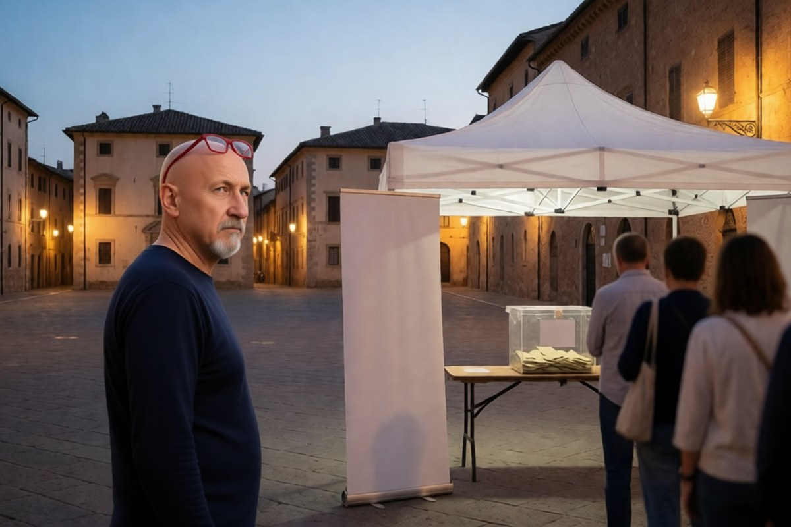

Politica italiana · 1 novembre 2026
Alle primarie del campo largo Conte si gioca due partite, e una non si vede

Il Movimento 5 stelle è passato dal 33 per cento del 2018 a circa il 12 di oggi, ma Conte è ancora al suo posto. Le primarie aperte a tutti rischiano di diventare un congresso del Partito democratico deciso da altri.
di Franco Zanghì
Nel 2018, alle politiche, il Movimento 5 stelle prese quasi il 33 per cento: un italiano su tre lo aveva votato, era il primo partito del paese. Alle europee del 2024 è sceso sotto il 10 per cento. In sei anni ha perso più di due voti su tre. Oggi i sondaggi lo danno intorno al 12 per cento: Youtrend per Sky TG24 lo segna al 12,6, meglio del fondo toccato alle europee, ma sempre la metà del Partito democratico e lontanissimo da quel 33.
Quando il Movimento cominciò a scendere, con il 17 per cento delle europee del 2019 e le sconfitte alle regionali, Luigi Di Maio lasciò la guida. Giuseppe Conte, invece, non solo non si è dimesso: ha rilanciato, si è preso tutto il partito e ha mandato via Beppe Grillo.
Perché nel Movimento nessuno lo cambia
Perché il Movimento oggi è Conte. Le regole le ha scritte lui, la costituente l'ha vinta lui, e chi poteva fargli ombra o è andato via o fa un altro mestiere. Roberto Fico governa la Campania, Alessandra Todde governa la Sardegna, Chiara Appendino ha preso le distanze. Sono questi i nomi che si fanno quando si parla del dopo Conte, ma nessuno dei tre oggi ha la forza o la voglia di sfidarlo.
Eppure il bilancio è quello che è: due governi, uno con la Lega e uno con il Partito democratico, il superbonus che ha scavato un buco nei conti dello Stato, i navigator. E un partito che, regione dopo regione, si è ridotto a percentuali da prefisso telefonico. Vincenzo De Luca, in un suo video, lo ha definito «luciferino» e gli ha rimproverato una «immacolata verginità politica».
La prima partita: Conte contro Schlein
Il Partito democratico ha deciso che la candidata è Elly Schlein, «con o senza primarie», come lei stessa ha detto all'assemblea del 19 ottobre. La regola che il Partito democratico propone è la più semplice, quella che si usa nei paesi normali: il candidato premier è il leader del partito più grande. Conte ha risposto che questa è una regola egemonica, e De Luca l'ha definita a sua volta un'offesa agli elettori.
La seconda partita: chi vota alle primarie
È quella che non si vede, ed è la più interessante. Le primarie aperte a tutti non sono un congresso del Partito democratico, ma rischiano di diventarlo, e di diventarlo in modo falsato. Gli elettori del Partito democratico che non amano Schlein, e sono tanti, alle primarie possono restare a casa. Gli elettori del Movimento, invece, hanno un candidato loro e vanno a votare.
Nel 2023 Schlein vinse ai gazebo, ma fra gli iscritti aveva vinto Stefano Bonaccini. Qui ho un sospetto, e lo chiamo sospetto perché prove non ce ne sono: ai gazebo poteva votare chiunque, anche chi non era iscritto, e credo che una parte degli elettori del Movimento quel giorno sia andata a votare, scegliendo Schlein. Fra lei e Bonaccini, per i progetti di Conte, lei era l'avversaria meno pericolosa. Se è così, quel disegno non è finito, e le primarie di oggi sarebbero il secondo tempo della stessa partita.
La strada di Craxi
C'è un precedente, e lo tira fuori sempre De Luca. Bettino Craxi aveva il 5 o il 6 per cento, ma si presentava da solo, fuori da una coalizione. Dopo il voto si sedeva al tavolo e diceva: se volete i miei voti, il presidente del Consiglio lo faccio io. E gli altri accettarono.
Conte potrebbe farlo anche oggi, ma a una condizione: uscire dal campo largo e correre da solo. Se Partito democratico e Movimento corressero separati e insieme raggiungessero la maggioranza, alle consultazioni il presidente della Repubblica dovrebbe comunque chiamare loro, e a quel punto Conte potrebbe mettere il prezzo sul tavolo. Dentro la coalizione questa mossa non la può fare, perché chi entra in una coalizione accetta una regola, e la regola più ragionevole resta quella del partito più grande.
Due strade, due prezzi
O Conte resta nel campo largo e si gioca tutto alle primarie, sperando che i suoi votino in massa e che gli elettori del Partito democratico restino a casa. Oppure esce, corre da solo e aspetta il giorno dopo le elezioni, come Craxi. Nella prima strada rischia di perdere e di consegnare il Movimento a Schlein. Nella seconda rischia di essere accusato di aver diviso il centrosinistra e di aver regalato la vittoria a Giorgia Meloni.
Va detto anche quello che dice Conte. Il Movimento sostiene che non si può mettere preventivamente nelle mani di un altro partito, che alle regionali si è scelto ogni volta il candidato più competitivo e ha funzionato, e che le primarie sono il modo più democratico per decidere. Ragioni che hanno un loro peso. La domanda, però, resta la stessa: chi sceglie il candidato del centrosinistra, gli elettori del Partito democratico o quelli di Conte?
Fonti
- AGI, «Conte: la regola del partito più forte è egemonica», 13 settembre 2026
- Vincenzo De Luca, video «Giuseppe Conte, un politico luciferino», pagina Facebook, 18 settembre 2026
- L'Espresso, assemblea del Partito democratico, Schlein candidata «con o senza primarie», 19 ottobre 2026
- QuiFinanza, sondaggio Youtrend per Sky TG24 (Pd 22,2 per cento, M5s 12,6), settembre 2026
- Quotidiano Nazionale, Conte alla Festa dell'Unità di Bologna sulle primarie, 6 settembre 2026
- Il Post, «Di Maio si dimette da capo politico del M5S», 22 gennaio 2020
- Eunews, risultati delle elezioni politiche 2018 (M5s al 32,7 per cento alla Camera)
- LaPresse, «Campo largo, i leader annunciano: programma entro novembre e primarie a febbraio», 30 ottobre 2026
Questo è un articolo di opinione. Il paragone con Craxi è di Vincenzo De Luca: Conte non lo ha mai citato. L'ipotesi di un Conte che esce dal campo largo è un ragionamento dell'autore. Il sospetto sul voto di elettori del Movimento ai gazebo del 2023 è dell'autore ed è dichiarato come tale: non esistono analisi dei flussi che lo confermino. Il calendario delle primarie di febbraio è quello annunciato dai leader del campo largo il 30 ottobre 2026 e può cambiare.